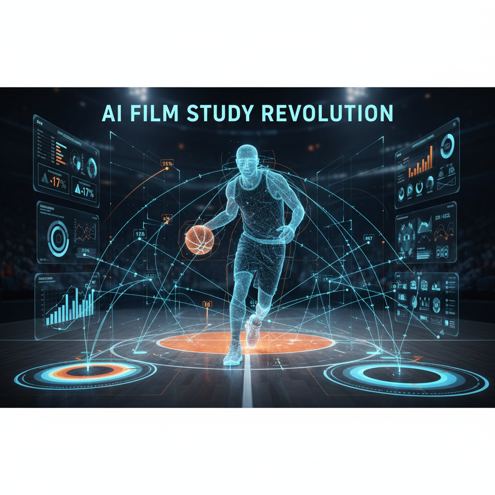

AI Film Study Tools Are Changing How Players Prepare
January 23, 2026

Film study has always been important in basketball, but AI is making it faster and more effective. AI-powered video analysis tools can now break down game footage automatically by tagging plays, tracking player movement, and highlighting key moments.
Instead of watching hours of film, players and coaches can quickly focus on specific plays, defensive breakdowns, or shooting tendencies. This saves time and helps teams prepare more efficiently for upcoming opponents.
For student-athletes balancing classes, practices, and games, AI film tools can be a big advantage. They make preparation more efficient and allow players to understand their strengths and weaknesses more clearly. As these tools improve, AI-assisted film study is becoming a normal part of basketball preparation.